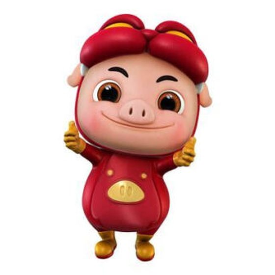
猪猪侠
GG Bond · 系列主角
- 身份
- 永远冲在最前面的那一个
- 战绩
- 第三季里，每次比赛都会战胜超人强和波比
- 高光
- 第四季里曾化身天使，帮助大傻怪
- 关系
- 菲菲叫他「小猪猪」；与超人强小时候曾是朋友
冷知识英文名「GG Bond」里的 GG，来自粤语「猪」的发音。
HEROES
五位伙伴，五种颜色。点击卡片切换，点击中间的卡片查看百度百科档案。
CHARACTER FILES
六位常驻角色的形象图、身份、关系和冷知识。文字资料整理自维基百科《猪猪侠》条目与广东咏声动漫官方介绍，形象图取自百度百科角色词条主图、公开图库与本站原有素材。

GG Bond · 系列主角
冷知识英文名「GG Bond」里的 GG，来自粤语「猪」的发音。
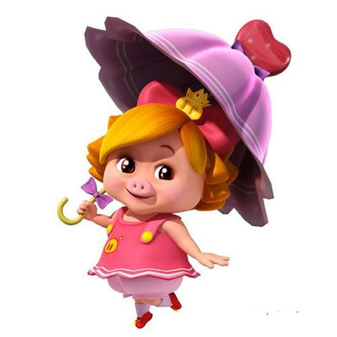
温柔而坚定的伙伴
冷知识《天使奇遇记》里她因遭女巫嫉妒被夺去美丽，在猪猪侠帮助下找回美丽，成为人们心目中的爱心天使。
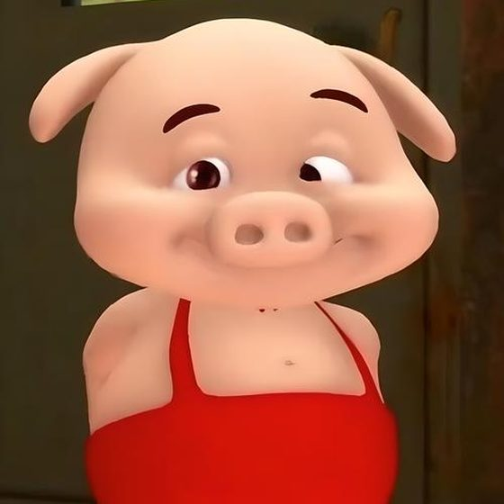
憨厚可爱的最佳伙伴
冷知识他的「呆」，是被假货坑出来的——所以买棒棒糖一定要认准超级棒棒糖。
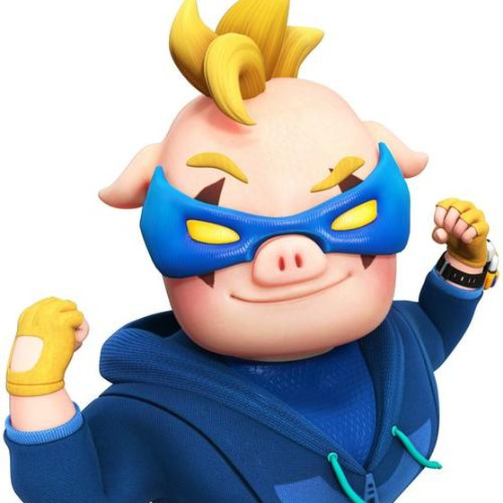
骄傲自满的富家小少爷
冷知识他的「小跟班」波比，是专门负责给他拍马屁的。
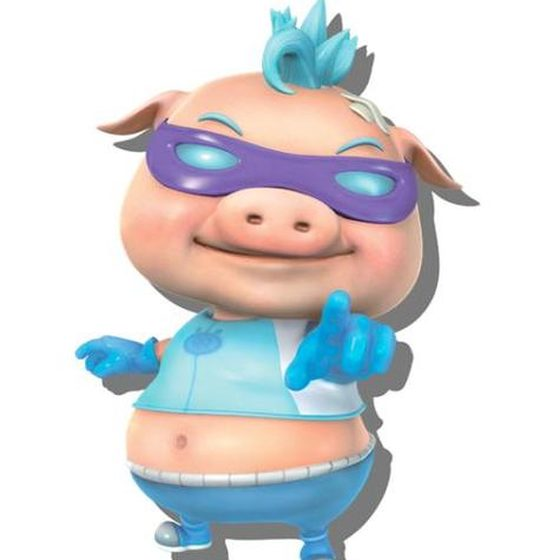
超人强的小跟班
冷知识在超星五灵侠系列里，他也成长为能独当一面的超星特工。
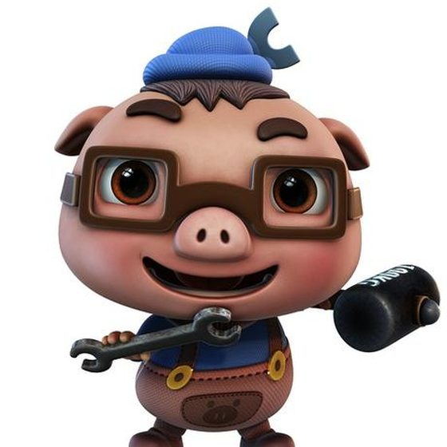
猪猪侠的技术后援
冷知识从「老师」到「博士」，他跟着猪猪侠一路从童话世界走到了九霄星。
SERIES CHRONICLE
自 2005 年开始创作、2006 年首播，十七季电视动画、三套番外、十一部大电影与四部舞台剧；下面这幅封面墙按播出顺序收录了 22 部主要作品的官方海报。
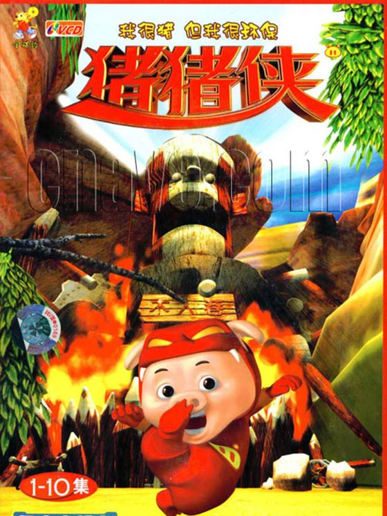
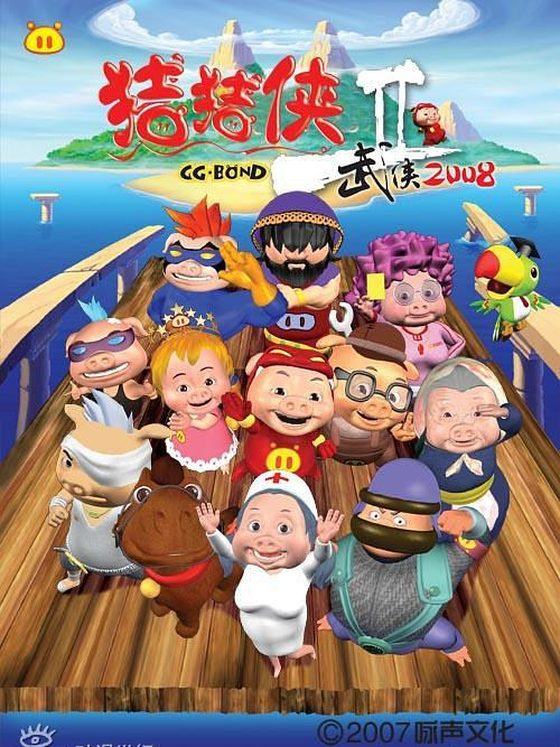
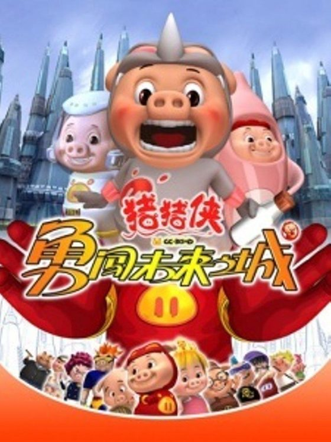
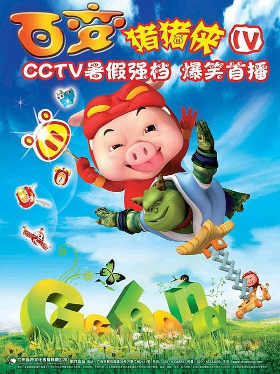
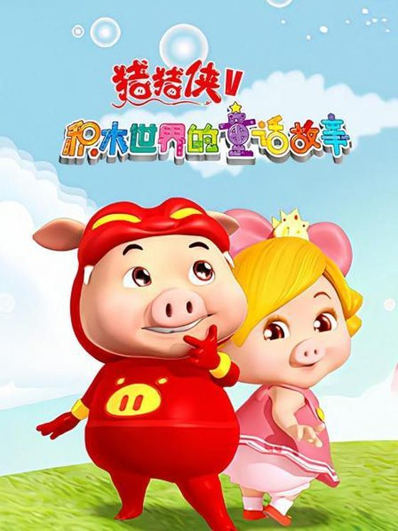
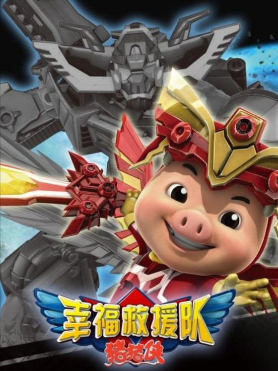
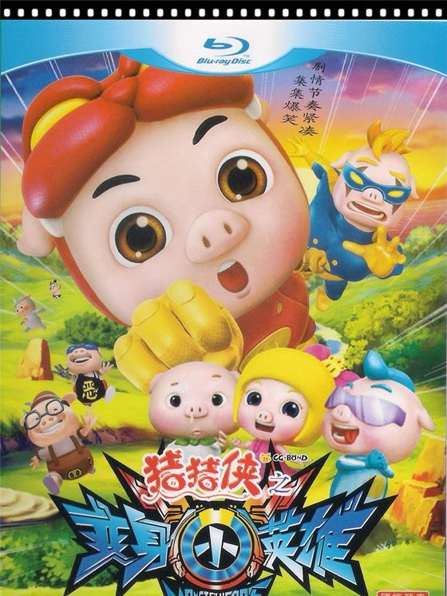
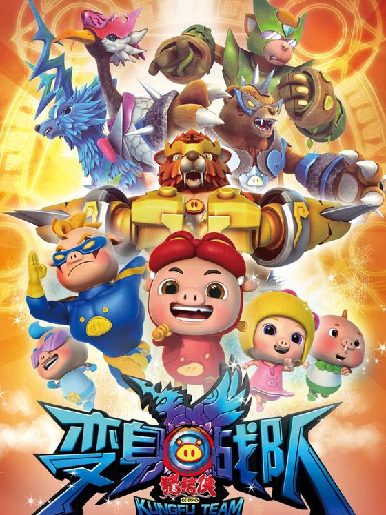
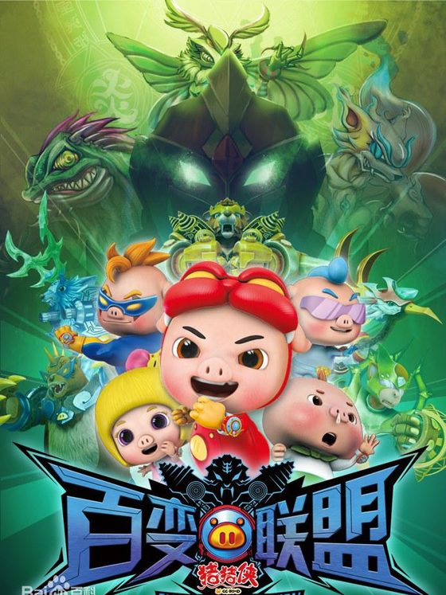
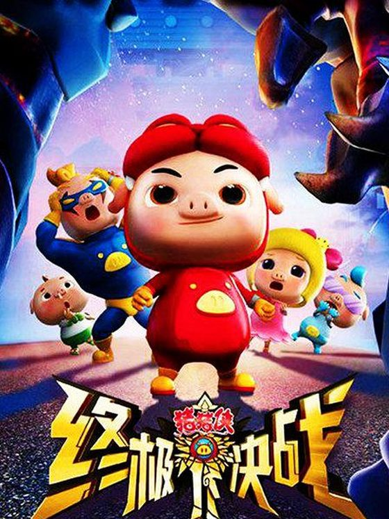
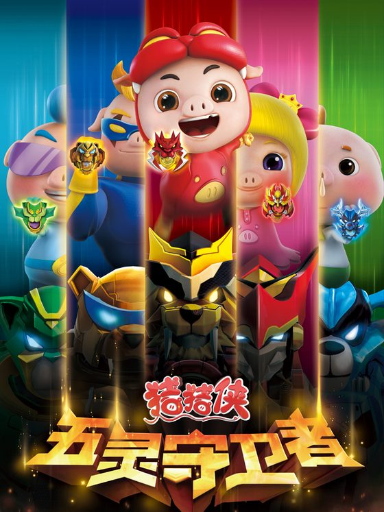
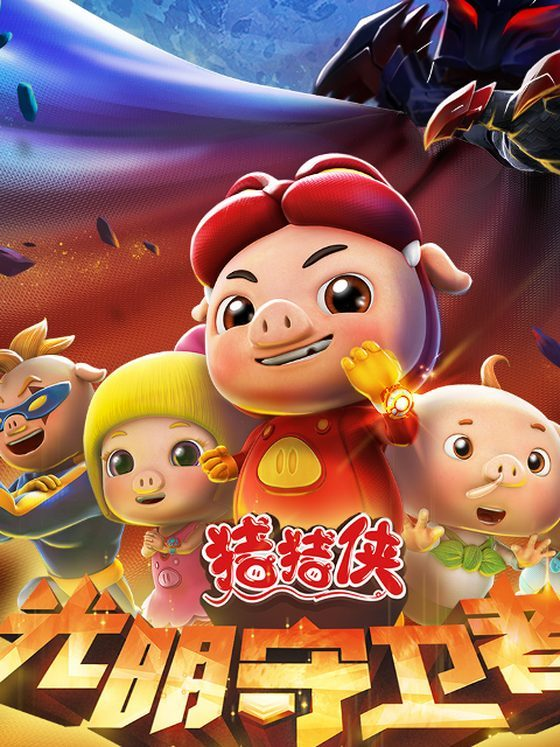
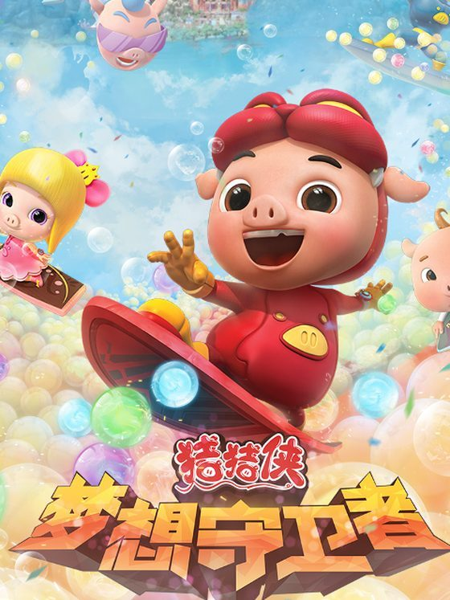
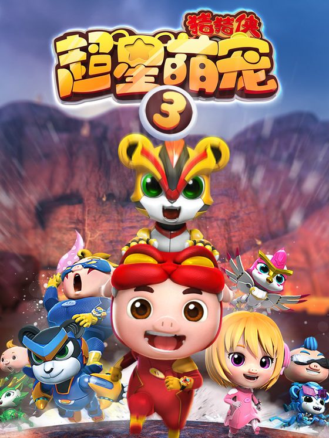
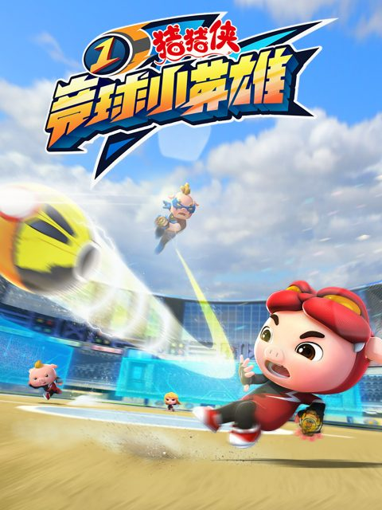
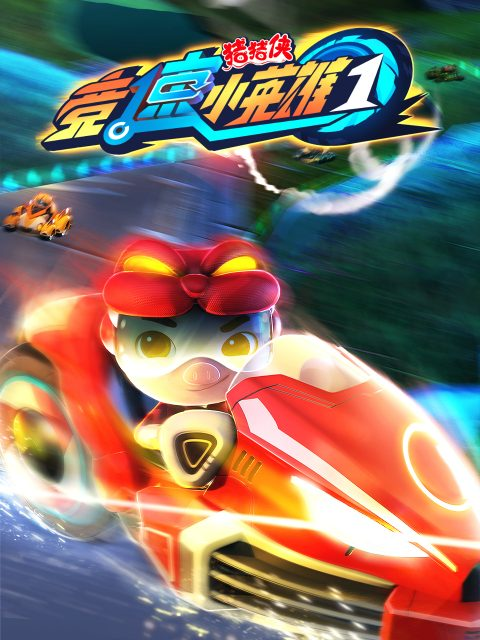
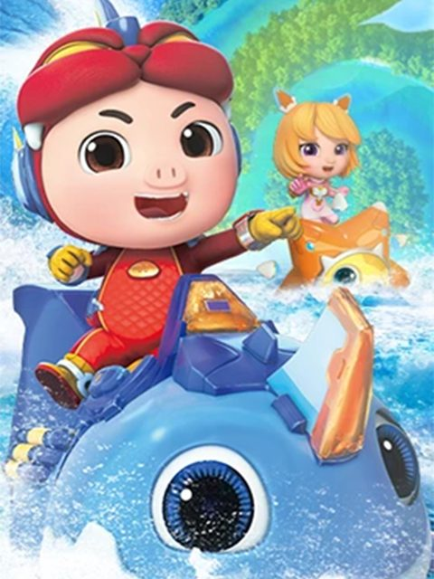
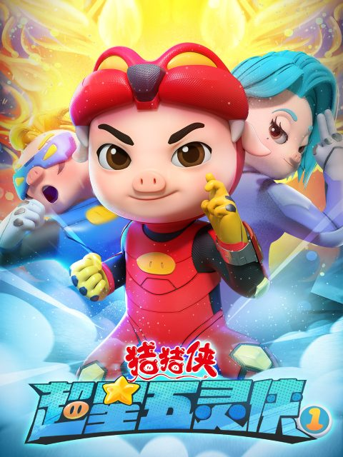
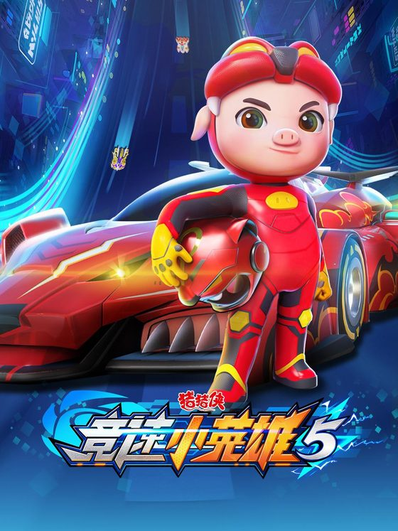
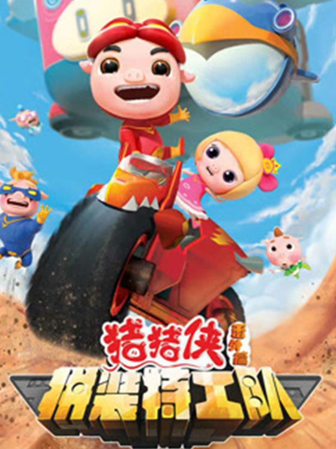
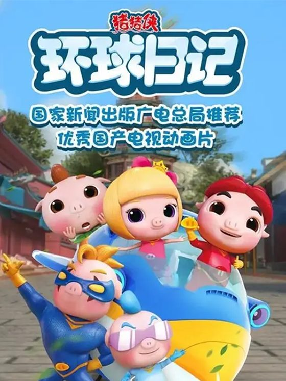
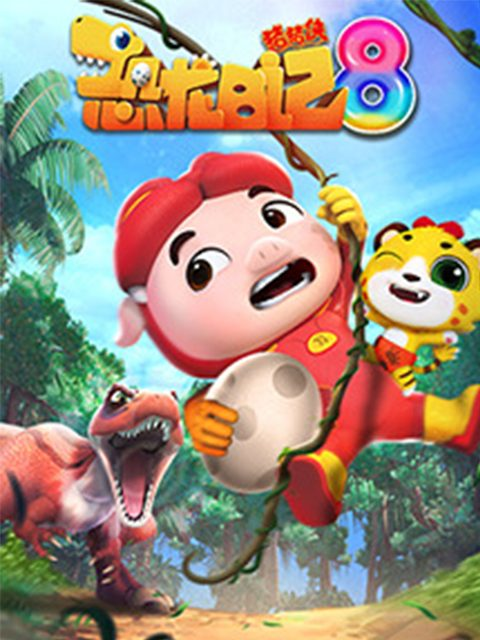
封面墙按播出顺序排列：第 1–10 季与番外的封面整理自豆瓣电影条目海报、优酷剧集封面与哔哩哔哩番剧库等公开资料，版权归原权利人所有。
系列起点，全 20 集。猪猪侠和他的伙伴们第一次和观众见面。
迷糊老师在比赛前给猪猪侠超级棒棒糖补充体力；小呆呆因假冒伪劣棒棒糖而变得痴呆。
小猪们的赛场时代：这一季里，猪猪侠每次比赛都会战胜超人强和波比。
集数最多的一季，全 80 集、每集 10 分钟。猪猪侠化身天使帮助大傻怪，也是从这里被叫「小猪猪」。
片头曲从这里换成《小英雄大肚腩》，成了很多人的童年记忆。
救援主题的一季，猪猪侠和小伙伴们开始承担更大的责任。
「变身」设定的开端，后来被改编成同名舞台剧。
获评 2015 年度优秀电视动画；片尾曲从这一季起换成《超级棒棒糖》。
联盟集结，为随后五灵系列的世界观打下基础。
大电影《猪猪侠之终极决战》的预热作品，内容大致为第七季至第九季的合集。
五灵世界正式登场，获评 2016 年度优秀国产动画——五灵锁的故事就从这里开始。
水晶城之外被封印的双子城，与一片能复制出邪恶双生子的垂直双子湖。
遗忘战士开始最后的计划——寻找失落在童话世界各地的五块五灵碎片。
全 124 集。迷糊博士带着猪猪侠与奇异的外星人打交道，铁拳虎登场，猪猪侠逐渐成为合格的星际特工。
全 104 集的热血赛场，是哔哩哔哩番剧库里评分最高的猪猪侠系列之一。
主角是超星特工们，剧情围绕对抗星盗组织展开。
全 104 集，把冒险的舞台搬到了海底。
全 156 集。失去强大超能力之后，猪猪们还是义无反顾地奔向九霄星。
主角换成猪猪侠与星航，舞台是竞速星球的赛道；与 1-4 部差异巨大，因此单独统计。
全 26 集的拼装主题番外，特工小队换上全新的机甲装备。
全 26 集，跟着猪猪侠环游世界，每集认识一个地方。
全 156 集的恐龙主题番外，是集数最多的一条支线。
系列的第一部大电影，共 4 集，以番外篇形式推出。
猪猪侠重返大银幕之作。
冒险升级，猪猪侠一行登上神秘的巨人岛。
与特别篇《终极决战前夜篇》前后呼应。
获广东省「五个一工程」奖。
一次关于世界与成长的冒险。
由咏声动漫与苏州奥拉动漫科技联合出品。
把冒险带到海底世界。
赛道主题的院线大电影。
瞄准星空的一次行动。
系列最新一部院线电影，老朋友的再一次登场。
美丽的菲菲因遭女巫嫉妒被夺去美丽，在猪猪侠的帮助下找回美丽，成为人们心目中的爱心天使。
猪猪侠与菲菲、小呆呆、超人强、波比在金鹅岛战胜重重困难抵达巨人城堡，却发现没有巨人只有小矮人；杰克抢夺金蛋，猪猪侠打败杰克、保卫金蛋，赢得小矮人的友谊。
猪猪侠因父母常不在身边而离家出走，被化身魔龙王的玫瑰王子控制化作宝石，父母在朋友帮助下解救了他，一家人通过沟通化解误会。
传说世界里的 X 晶体既能打开黑暗世界之门毁灭世界，也能净化人类心灵，只有内心纯洁的五灵卫才能感应。猪猪侠与父亲巴罗前往长鼻国寻找 X 晶体，黑心怪败走。
SOUNDTRACK
二十年来，片头曲和片尾曲换了一首又一首。点一下歌名就能试听，看看它陪你走过了哪几季。
正在播放
片头曲 · 自第 5 季开始
0:00 / --:--
音源取自公开分享的动画原声片段（每首约 1–3.5 分钟），仅作资料展示，版权归原权利人所有； 一首播完会自动接着播列表里的下一首。
PRODUCT LIBRARY
猪猪侠世界里的三件神器，每一件都藏着一段冒险。
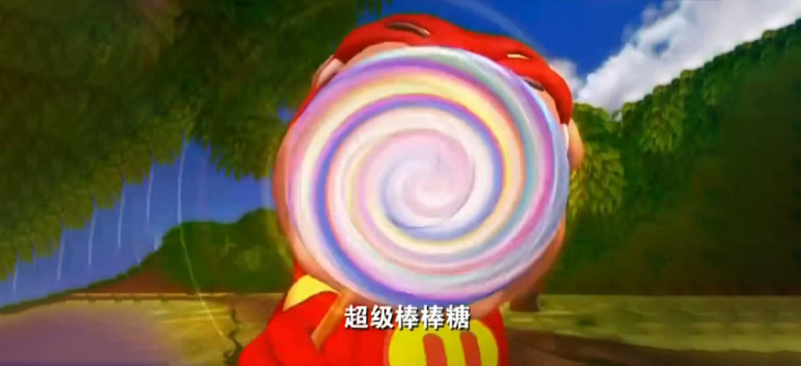
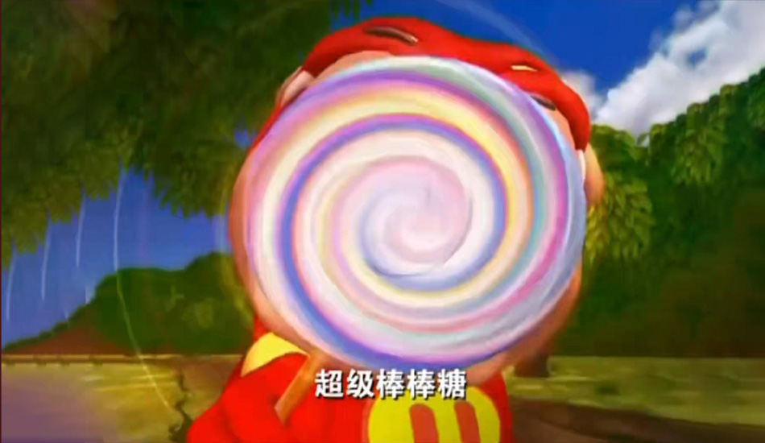
¥888拥有神奇的力量
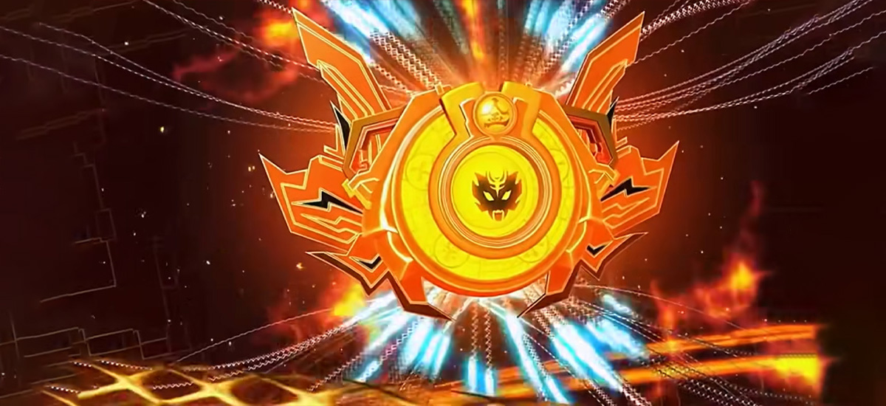
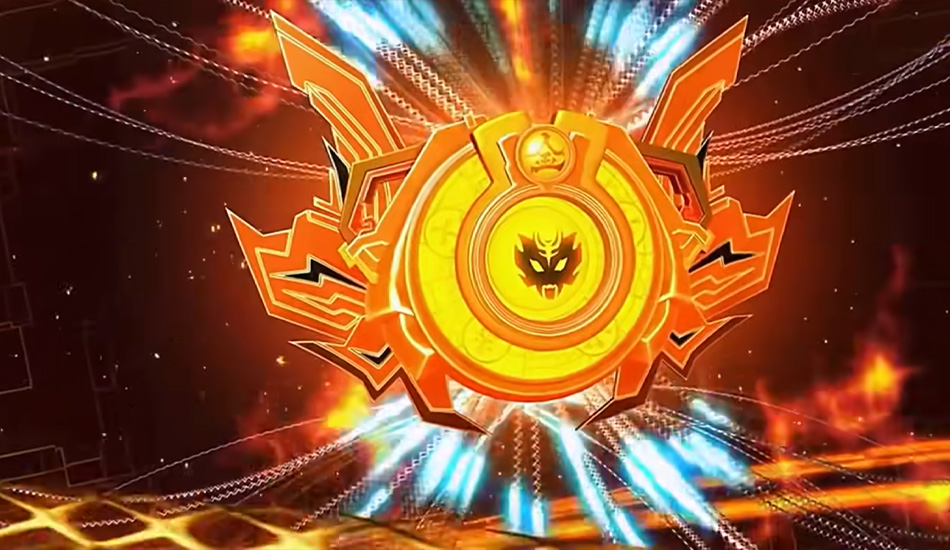
¥9999可以变身成五种兽型战士
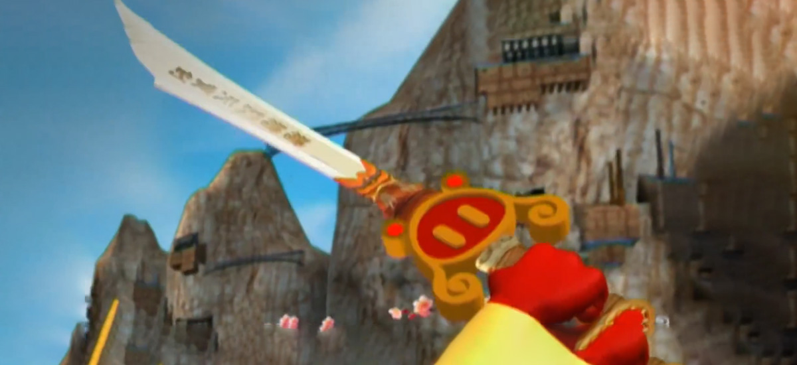
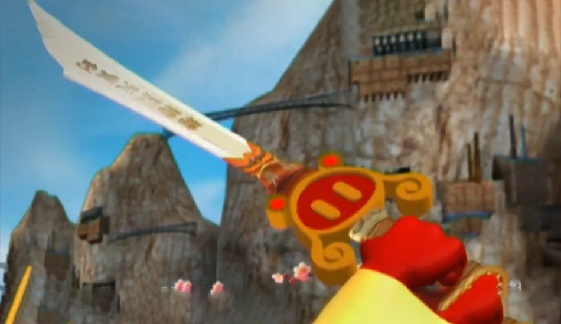
¥9.9猪猪侠的无敌神器
HONOURS & NUMBERS
来自广东咏声动漫官方介绍的一组数字，以及猪猪侠这些年捧回的奖。
「国民『猪猪侠』IP 出海全产业链贸易服务示范」入选服贸会文化创意示范案例。
「京东外卖 × 猪猪侠」联名获中国授权业大奖年度创新授权项目。
《猪猪侠之魔幻侏罗纪》入选国家广播电视总局「重温经典」百部作品展播。
「猪猪侠」纳入广东省重点商标保护名录。
猪猪侠受聘为广州市「扫黄打非」宣传形象大使。
《猪猪侠之超星萌宠》获电视专题类二等奖。
《猪猪侠之英雄猪少年》获广东省「五个一工程」奖。
《猪猪侠之五灵守卫者》获评年度优秀国产动画。
《猪猪侠之变身战队》获评年度优秀电视动画。
猪猪侠被认定为国家重点动漫产品。
荣获中国十大卡通形象大奖。
《百变猪猪侠》获最具产业价值作品奖。
数据与荣誉整理自广东咏声动漫官网公开资料（winsing.net）。
SHOP
所有神器均已售罄，点击卡片可以查看详细介绍。
拥有神奇的力量
可以变身成五种兽型战士
猪猪侠的无敌神器
QUIZ
八道题，全部取材于上面的年表、角色档案与官方资料。看看你能拿到什么称号。
0/ 8
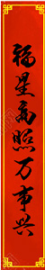
SPRING FESTIVAL
猪猪侠提醒您，距离过年还有
春节倒计时加载中…
猪猪商城